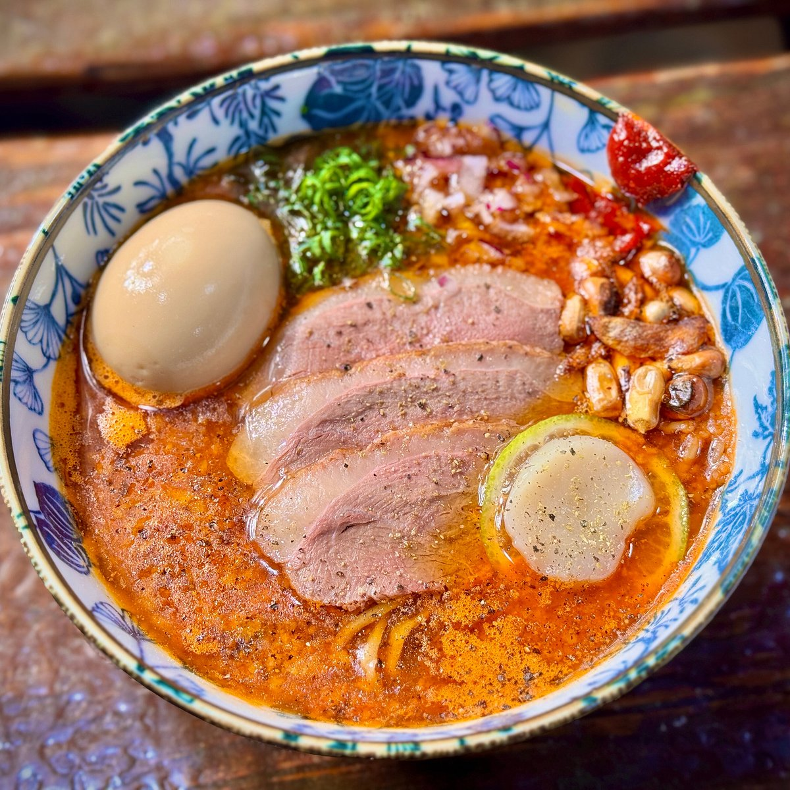

Bisque Japonaise de Homard, Magret de Canard fumé, Médaillon de Saint-Jacques d’Hokkaido au Poivre Citronné, Maïs Cancha Chulpi du Pérou, Tamago injecté d’huile de Homard, Shoyu Tare, Seabura
| Nom | Image | Prix |
|---|---|---|
| Ramen de Homard ラーメン デ ロブスター |
 |
Prix : 19.50€ |